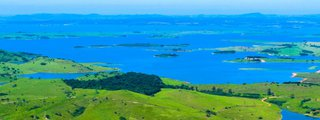

O Morro do Gavião é uma das principais atrações turísticas da região, localizado na Estr. Fazenda São João - Limeira, Ribeirão Claro. Com uma altitude de 1.663 metros, o morro oferece vistas deslumbrantes da paisagem ao redor, incluindo montanhas e florestas.
O Morro do Gavião, situado na Fazenda São João, às margens de uma encantadora represa, ergue-se a 850 metros acima do nível do mar. Oferece esportes radicais como rapel, escalada e voo livre, sendo também um local encantador para amantes da natureza que desejam explorar trilhas e apreciar paisagens deslumbrantes. A fazenda tem um restaurante com vista panorâmica, e hóspedes dos Chalés Vila da Rosa recebem 10% de desconto nas Aventuras no Morro do Gavião.
Valor
A entrada para o morro é de 3,00
Tempo:
A trilha leva 15 a 30 minutos.
Horário de funcionamente:
O morro do gavião abre aos sábados e domingos das 09:00 ás 18:00
Dicas para Visitar o Morro do Gavião
Melhor Horário: Tente visitar durante o amanhecer ou o pôr do sol para aproveitar vistas incríveis e temperaturas mais amenas.
Roupas Confortáveis: Use roupas leves e confortáveis, ideais para caminhadas. Calçados apropriados, como tênis ou botas de trilha, são essenciais.
Hidratação: Leve bastante água, especialmente se você planeja fazer trilhas. É importante se manter hidratado.
Lanches Saudáveis: Traga lanches leves e saudáveis, como frutas e barras de cereal, para fazer uma pausa durante a caminhada.
Câmera: Não esqueça sua câmera ou smartphone para capturar as paisagens deslumbrantes. As vistas são espetaculares!
Respeito à Natureza: Mantenha a área limpa, levando seu lixo de volta e respeitando a fauna e flora locais.

Acompanhamento: Se possível, vá com amigos ou familiares. É mais seguro e divertido explorar em grupo.
Verifique as Condições do Tempo: Consulte a previsão do tempo antes de sair. Dias ensolarados são ideais para uma visita.
Sinalização: Preste atenção à sinalização das trilhas. Isso ajuda a garantir que você permaneça no caminho correto.
Atrações Próximas: Aproveite para visitar outras atrações nas proximidades, como a Cascata do Gavião e o Centro Cultural, para um dia completo de turismo.
Celular Carregado: Certifique-se de que seu celular está carregado. Além de ser útil para fotos, pode ser importante em caso de emergência.
Check-in Local: Informe alguém sobre seu plano de visita, especialmente se você estiver indo sozinho.
Qualquer dúvida entre em contato,Telefone:(43) 99142-1351